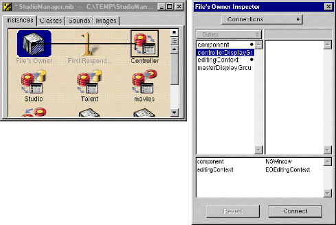
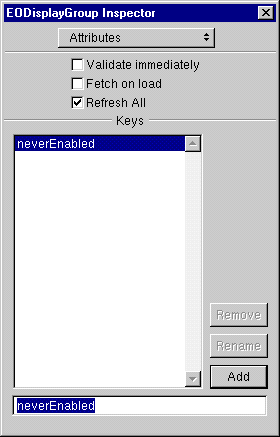
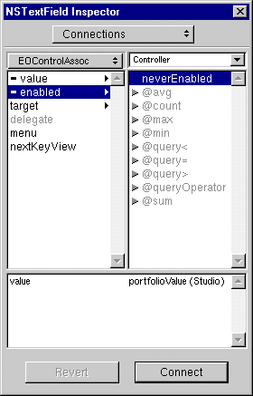

Drag a display group from the EOPalette to the nib file window.
Double click the title of the display group to select it.
Give the display group the name "Controller".
Control-drag from FileÍs Owner to the Controller icon.
In the Connections inspector, select controllerDisplayGroup.
Click Connect.

Next add the neverEnabled method as a property of the controller display group.
Select the Controller display group in the nib file.
In the Attributes inspector, enter ñneverEnabledî in the field.
Click Add.

Now hook up the field to the display group using an EOControlAssocation to bind its enabled aspect to the neverEnabled method.
Control-drag from the Revenue field to the Controller display group.
In the Connections inspector, select EOControlAssoc from the pop-up list at the top of the left column.
Select enabled in the left column.
Select neverEnabled in the right column.
Click OK.

Now that the interface controller, the controller display group, and the Revenue field are interconnected via their outlets and associations, you can implement the method bound to the enabled aspect (in StudioManager.Java on the client).
public boolean neverEnabled() {
return false;
}
Build the project and test the application. The Revenue field has a gray background and cannot be written into.